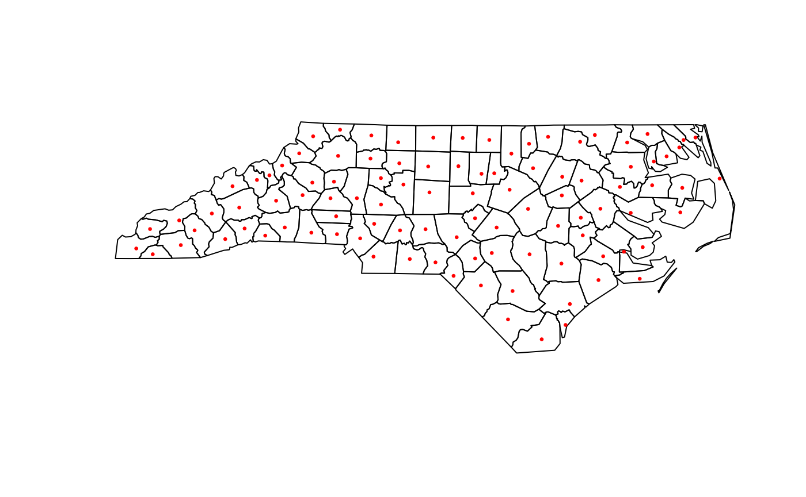

This package was designed to be used to easily calculate population weighted centroids within R. While there are many scenarios in which you may require a weighted centroid, I present the following as an typical workflow for my usage.
For this example we are going to be calculating the population weighted centroids for North Carolina counties. As such, we require population and geographic data at a more granular geographic classification. We will use tracts.
Downloading Data
We can download census population estimates and geographic layer
files using the ever convenient tidycensus package.
sf also has a North Carolina counties file, which we will
use later, but you can always download census geometries directly from
the census using tigris.
library(centr)
library(sf)
library(tidycensus)
NC_tracts <- get_decennial("tract", state = "NC", "P1_001N", year = 2020, geometry = TRUE)
NC_counties <- st_read(system.file("shape/nc.shp", package = "sf")) Setting Up
We will need fields that tells us what county each tract is in and how many people live within each tract. Thankfully, the first 5 digits of the GEOID, uniquely identify the county a tract is in, which means that we can easily create a new field with this ID. The value field also gives us our weights.
NC_tracts <- NC_tracts |>
transform(GEOID_county = substring(GEOID, 1, 5)) |>
subset(select = c(GEOID_county, value))Let’s use mean_center() to get our county
geometries!
mean_center(NC_tracts, group = "GEOID_county", weight = "value")
#> Error in x_checks(x, x_name, allowed_geom): `NC_tracts` contains empty geometriesCalculation Mean Centers
Oh, it looks like we forgot one thing. At least one of our tracts has
an empty geometry. Before running mean_center(), we must
filter out empty geometries.
NC_tracts <- subset(NC_tracts, !st_is_empty(NC_tracts))Now, we can proceed.
NC_county_means <- mean_center(NC_tracts, group = "GEOID_county", weight = "value")
NC_county_means
#> Simple feature collection with 100 features and 1 field
#> Geometry type: POINT
#> Dimension: XY
#> Bounding box: xmin: -84.02568 ymin: 34.0428 xmax: -75.67387 ymax: 36.49819
#> Geodetic CRS: NAD83
#> First 10 features:
#> group geometry
#> 1 37037 POINT (-79.2079 35.75337)
#> 2 37105 POINT (-79.1755 35.46066)
#> 3 37013 POINT (-76.94663 35.52365)
#> 4 37001 POINT (-79.41359 36.07104)
#> 5 37063 POINT (-78.90047 35.98795)
#> 6 37065 POINT (-77.65082 35.90178)
#> 7 37129 POINT (-77.87961 34.21068)
#> 8 37151 POINT (-79.82808 35.76379)
#> 9 37159 POINT (-80.52144 35.62169)
#> 10 37181 POINT (-78.40247 36.33333)Let’s see how it looks.
plot(st_geometry(NC_counties))
plot(st_geometry(NC_county_means), pch = 20, cex = 0.5, col = "red", add = TRUE)
Calculating Median Centers
We can also calculate median centers, which is the point that
minimizes distance to all geometries. median_center() only
supports projected coordinates, so let’s project to the North Carolina
state plane.
Let’s see how it looks.
And that’s the whole game, so go out and try it for yourself!